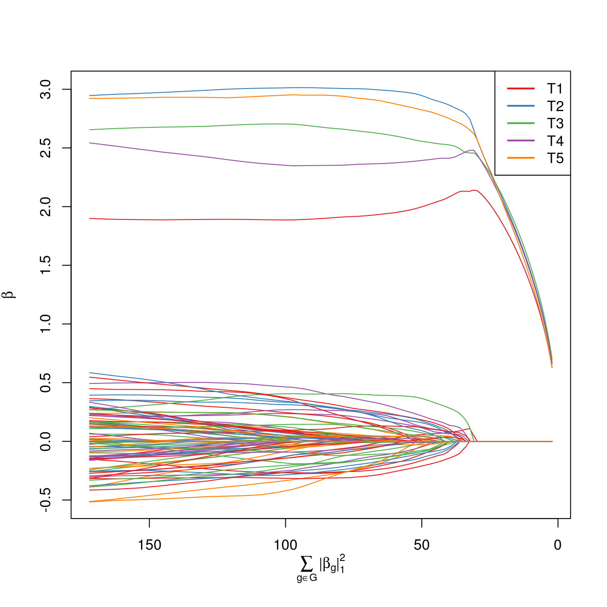
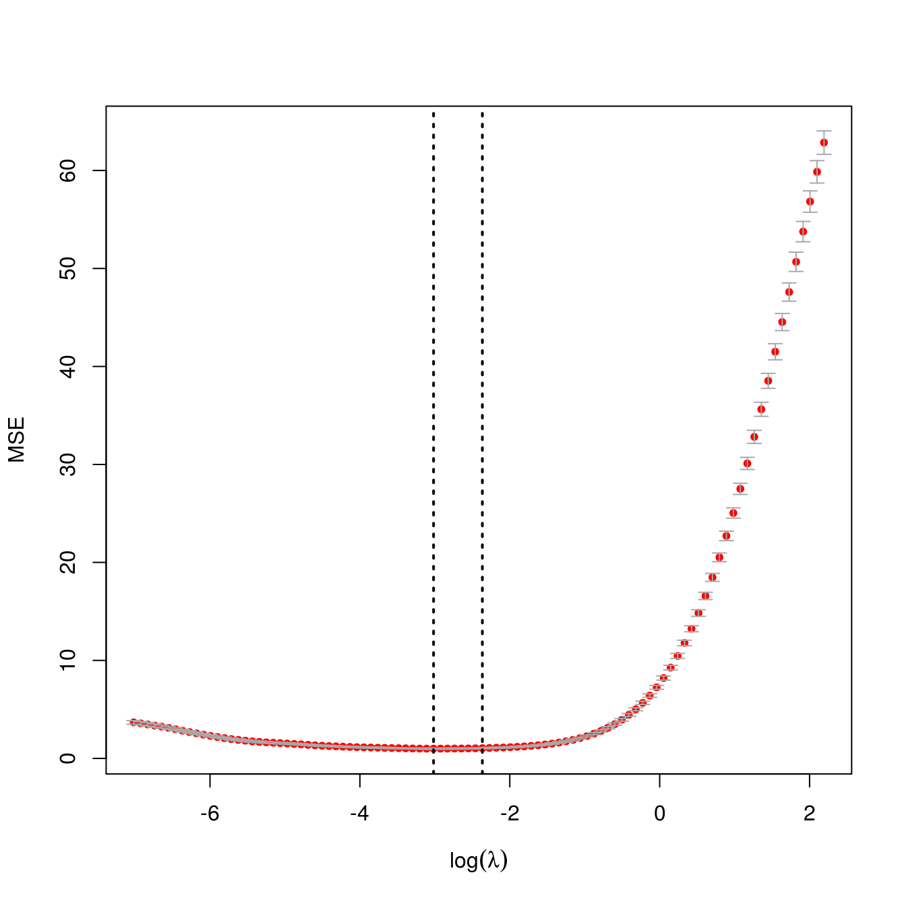

ExclusiveLasso Packagevignettes/ExclusiveLasso.Rmd
ExclusiveLasso.Rmd\[ \DeclareMathOperator{\argmin}{arg\,min} \DeclareMathOperator{\sign}{sign} \DeclareMathOperator{\trace}{Trace} \newcommand{\bI}{\mathbf{I}} \newcommand{\bM}{\mathbf{M}} \newcommand{\bo}{\mathbf{o}} \newcommand{\br}{\mathbf{r}} \newcommand{\bv}{\mathbf{v}} \newcommand{\bu}{\mathbf{u}} \newcommand{\bx}{\mathbf{x}} \newcommand{\bX}{\mathbf{X}} \newcommand{\by}{\mathbf{y}} \newcommand{\bz}{\mathbf{z}} \newcommand{\bw}{\mathbf{w}} \newcommand{\bW}{\mathbf{W}} \newcommand{\bg}{\mathbf{g}} \newcommand{\bV}{\mathbf{V}} \newcommand{\bmu}{\mathbf{\mu}} \DeclareMathOperator{\prox}{\textsf{prox}} \]
The ExclusiveLasso package implements the exclusive lasso penalty of Zhou et al. (2010), which Obozinski and Bach showed is the tightest convex relaxation of the combinatorial constraint “exactly one non-zero element in each group” (2012, Section 4.2). For the Gaussian case, we implement the two algorithms discussed in Campbell and Allen (2017):
The scalings used in the ExclusiveLasso package are not exactly those used by Campbell and Allen, so we describe the algorithms used in the package in detail below.
The ExclusiveLasso package implements the exclusive lasso penalty (Zhou, Jin, and Hoi 2010; Campbell and Allen 2017) for structured variable selection. The interface and internal design intentionally mimic those of the glmnet package (Friedman, Hastie, and Tibshirani 2010) and, by extension, other sparse regression packages which follow glmnet, notably ncvreg for non-convex regularization and grpreg for the group lasso penalty (Breheny and Huang 2011, 2015).
We demonstrate its use on a small simulated data set:
set.seed(1234) library(ExclusiveLasso) n <- 100 p <- 100 g <- 5 groups <- rep(1:g, length.out=p) Sig <- toeplitz(0.7^((1:p) - 1)) Sig_L <- chol(Sig) beta <- rep(0, p); beta[1:g] <- runif(g, 2, 3) X <- matrix(rnorm(n * p), ncol=p) %*% Sig_L colnames(X) <- paste0(ifelse(beta != 0, "T", "F"), 1:p) y <- X %*% beta + rnorm(n) exfit <- exclusive_lasso(X, y, groups=groups) print(exfit)
## Exclusive Lasso Fit
## -------------------
##
## N: 100. P: 100.
## 5 groups. Median size 20
##
## Grid: 100 values of lambda.
## Miniumum: 0.0008960734
## Maximum: 8.960734
## Degrees of freedom: 0.4824523 --> 83.95467
## Number of selected variables: 5 --> 85
##
## Fit Options:
## - Family: Gaussian
## - Intercept: TRUE
## - Standardize X: TRUE
## - Algorithm: Coordinate Descent
##
## Time: 2.519 secsHere we have significant correlation both within and between groups, but the correlation is highest between the 5 true positives.
When plotting regularization paths, the last variable to leave the active set is identified in the legend by default.
plot(exfit)

Note that variables from the same group are shown in the same color.
In many cases where the exclusive lasso is used, we have structural knowledge about the true sparsity pattern and know that we want to select exactly one variable from each group, so tuning \(\lambda\) is not essential. If, however, we do wish to tune \(\lambda\) in a data-driven manner, the ExclusiveLasso package provides a \(K\)-fold cross-validation function:
exfit_cv <- cv.exclusive_lasso(X, y, groups=groups, parallel=FALSE) plot(exfit_cv)

Running the exclusive lasso is typically quite fast and should not typically be necessary to run cross-validation in parallel. For large problems or problems with many groups, it may be necessary to parallize model fits. The ExclusiveLasso package is integrated with the foreach package, which provides interfaces to a number of parallelization schemes.
We use the “\(1/n\)”-scaling for penalized regression, as well as including a factor of \(1/2\) in the penalty term:
\[\hat{\beta}_{\text{EL}} = \argmin -\frac{1}{n}\sum_{i=1}^n l(y_i; \bx_i^T\beta) + \lambda\sum_{g \in \mathcal{G}} \frac{\|\beta_g\|_1^2}{2} \tag{EL-GLM} \label{eq:el-glm}\]
where \(l(y_i; \bx_i^T\beta)\) is the log-likelihood of the observation \((\bx_i, y_i)\). For convenience, we will use the script \(\ell\) to denote the scaled aggregate negative log-likelihood yielding the problem:1
\[\hat{\beta}_{\text{EL}} = \argmin \ell(\by; \bX\beta) + \lambda\sum_{g \in \mathcal{G}} \frac{\|\beta_g\|_1^2}{2}\]
In the Gaussian case, this can be simplified to \[\hat{\beta}_{\text{EL}} = \argmin \frac{1}{2n}\|\by - \bX\beta\|_2^2 + \underbrace{\lambda \sum_{g \in \mathcal{G}} \frac{\|\beta_g\|_1^2}{2}}_{\lambda * P(\beta)} \tag{EL-Gaussian} \label{eq:el-gaussian}\]
We note that in the case where \(\mathcal{G} = \left\{\{1\}, \{2\}, \dots, \{p\}\right\}\) – that is, there is no meaningful group structure – the penalty simplifies to the standard ridge penalty \(\frac{\lambda}{2}\|\beta\|_2^2\).
Campbell and Allen propose the use of a proximal gradient algorithm to solve Problem \(\eqref{eq:el-gaussian}\). Proximal gradient algorithms, first proposed in the sparse regression context by the “ISTA” algorithm of Daubechies et al. (2004) and later popularized by Beck and Teboulle (2009), combine a gradient descent-type update for the smooth part of the objective with the proximal operator associated with the non-smooth part. They are particularly common for problems where the non-smooth part has a simple (or even closed form) solution.2 Proximal gradient have been applied to a wide-range of problems. See, e.g., Parikh and Boyd (2014) for a recent review.
For a general penalized regression problem of the form \[\argmin_{\beta} f(\beta) + \lambda g(\beta)\] where \(f(\cdot)\) is convex and smooth and \(g(\cdot)\) is convex, but not smooth, proximal gradient algorithms work by iterating \[\beta^{(k)} = \prox_{t_k \lambda g}\left(\beta^{(k-1)} - t_k \nabla f(\beta^{(k-1)}\right)\] until convergence, where \(t_k\) is a step-size which may be fixed or chosen by a line-search method, and \(\prox\) is the proximal operator of \(t_k \lambda g\): \[\prox_{t_k \lambda g}(z) = \argmin_x t_k \lambda g(x) + \frac{1}{2}\|x - z\|_2^2\]
Note that, unlike the use of the proximal operator in ADMM and similar methods (Boyd et al. 2011), the step-size \(t_k\) appears in the proximal operator.
The name “ISTA” comes from the proximal operator of the \(\ell_1\)-norm: \[\prox_{\lambda |\cdot|}(z) = \argmin_x \lambda |x| + \frac{1}{2}(x - z)^2\] which is the so-called “soft-thresholding” operator: \[\mathcal{S}_{\lambda}(x) = \begin{cases} x - \lambda & x > \lambda \\ 0 & |x| \leq \lambda \\ x + \lambda & x < -\lambda \end{cases}\] which gives the iterative soft-thresholding algorithm: \[\beta^{(k)} = \mathcal{S}_{t\lambda}\left(\beta^{(k-1)} - \frac{t}{n}\bX^T(y - \bX\beta^{(k-1)})\right) = \mathcal{S}_{t\lambda}\left((\bI + t \bX^T\bX/n)\beta^{(k-1)} - t\bX^T\by/n\right)\] where \(t = 1 / \lambda_{\text{max}}(X^TX/n)\) is a constant step-size ensuring convergence.
Hence, for Problem \(\eqref{eq:el-gaussian}\), the proximal gradient algorithm becomes \[\beta^{(k)} = \prox_{t \lambda P(\cdot)}\left((\bI + t\bX^T\bX/n)\beta^{(k-1)} - t\bX^T\by/n\right)\]
Unlike the standard \(\ell_1\)-penalization case, this proximal operator cannot be evaluated in closed form and an iterative algorithm must be used to approximate the proximal operator. This gives rise to a so-called inexact proximal gradient scheme, convergence conditions of which were analyzed by Schmidt et al. (2011). Campbell and Allen (2017) propose the use of a coordinate-descent scheme to evaluate the proximal operator, described in more detail below.
We wish to evaluate the proximal operator: \[\argmin_{x} \frac{1}{2}\|x - z\|_2^2 + \frac{c}{2}\sum_{g \in \mathcal{G}} \|x_g\|_1^2\] Note that we fold the constant terms into a single term \(c\) in this subsection.
Campbell and Allen (2017) propose the use of coordinate descent (Shi et al. 2016) for this problem and show that it converges, using the sufficient conditions of Tseng (2001).
We first note that the proximal operator can be split according to the group structure:3 \[\frac{1}{2}\|x - z\|_2^2 + \frac{c}{2}\sum_{g \in \mathcal{G}} \|x_g\|_1^2 = \sum_{g \in \mathcal{G}} \frac{1}{2}\|x_g - z_g\|_2^2 + \frac{c}{2}\|x_g\|_1^2 \] so it suffices to derive the coordinate updates for the simpler problem: \[\frac{1}{2}\|x - z\|_2^2 + \frac{c}{2}\|x\|_1^2\] Without loss of generality, we derive the update formula for \(x_1\): \[\argmin_{x_1} \frac{1}{2}\|x - z\|_2^2 + \frac{c}{2} \|x\|_1^2 \implies \argmin_{x_1} \frac{1}{2}(x_1 - z_1)^2 + \frac{c}{2}\left(2|x_1| * \|x_{-1}\|_1 + x_1^2\right)\] Re-grouping and adjusting constant terms, this becomes: \[\begin{align*} & \argmin_{x_1} \frac{1}{2}(x_1 - z_1)^2 + \frac{c}{2}\left(2|x_1| * \|x_{-1}\|_1 + x_1^2\right) \\ \implies &\argmin_{x_1} \frac{x_1^2 - 2x_1z_1 + z_1^2 + 2c\|x_{-1}\|_1 * |x_1| + cx_1^2}{2} \\ \implies &\argmin_{x_1} \frac{(1+c)x_1^2 - 2x_1z_1 + z_1^2 + 2c\|x_{-1}\|_1 * |x_1|}{2} \\ \implies &\argmin_{x_1} \frac{1}{2} 2c\|x_{-1}\|*|x_1| + \frac{1}{2}\left[(1+c)x_1^2 - 2x_1z_1\right] \\ \implies &\argmin_{x_1} \frac{c}{1+c}\|x_{-1}\|*|x_1| + \frac{1}{2(1+c)}\left[(1+c)x_1^2 - 2x_1z_1\right] \\ \implies &\argmin_{x_1} \frac{c}{1+c}\|x_{-1}\|*|x_1| + \frac{1}{2}\left[x_1^2 - 2x_1\frac{z_1}{1+c}\right] \\ \implies &\argmin_{x_1} \frac{c}{1+c}\|x_{-1}\|_1 * |x_1| + \frac{1}{2}\left[x_1^2 - 2x_1 \frac{z_1}{1+c} + \frac{z_1^2}{(1+c)^2}\right] \\ \implies &\argmin_{x_1} \frac{c}{1+c} \|x_{-1}\|_1 * |x_1| + \frac{1}{2}\left(x_1 - \frac{1}{1+c}z_1\right)^2 \end{align*}\] which we recognize as the proximal operator of the scaled absolute value function \[f(y) = \frac{c}{1+c}\|x_{-1}\|_1 * |y|\] evaluated at \(\frac{z_1}{1+c}\) giving the coordinate update: \[x_i \leftarrow \mathcal{S}_{\frac{c}{1 + c} \|x^{-i}\|}\left(\frac{1}{1 + c} z_i\right)\]
Pulling the common \((1+c)^{-1}\) term out we get: \[x_i \leftarrow \frac{1}{1+c} \mathcal{S}_{c\|x^{-i}\|}\left(z_i\right)\]
Putting these pieces together, we get the following proximal gradient algorithm for \(\eqref{eq:el-gaussian}\).
Generalizing slightly, if we have a vector of offsets \(\bo\) and a (diagonal) weight matrix \(\bW\) and an intercept term \(\alpha\), the combined algorithm becomes:
If we wish to include box constraints of the form \(l_i \leq \beta_i \leq u_i\), we can simply directly impose these after each soft-thresholding step.
Campbell and Allen (2017) also propose using a coordinate descent algorithm to solve \(\eqref{eq:el-gaussian}\) directly, similar to that used by Friedman et al. in the glmnet package (2007; 2010) and by Wu and Lange (2008), among several others, for lasso regression. As with the proximal operator, this is slightly more complicated because the penalty term is non-separable, but they show that coordinate descent converges for the general problem (of which the proximal operator is a special case), again using the analysis of Tseng (2001).
Coordinate descent works by sequentially selecting one variable to update and fixing all others temporarily, minimizing the objective as a function of the selected variable, and cycling through all variables until convergence. In spite of its simple structure, many variations of coordinate descent are possible, depending on how the internal minimization is solved, the strategy by which the active is chosen, etc. Shi et al. (2016) review a number of variants. In the case of sparse regression, significant speed-ups can also be obtained by use of an “active-set” strategy, where non-zero variables are updated more frequently than zero variables.
The coordinate updates for the general problem generalize those used in the proximal operator. Suppose we wish to update \(\beta_i\) where \(i \in g\). Then we solve: \[\argmin_{\beta_i} \frac{1}{2n} \|\by - \bX_{-i}\beta_{-i} - \bx_i\beta_i\|_2^2 + \frac{\lambda}{2}\sum_{g \in \mathcal{G}} \|\beta_g\|_1^2\] We let \(\br = \by - \bX_{-i}\beta_{-i}\) be the “working residual” and omit penalty terms that do not have \(\beta_i\) in them: \[\argmin_{\beta_i} \frac{1}{2n} \|\br - \bx_i\beta_i\|_2^2 + \frac{\lambda}{2}\left(|\beta_i| + \|\beta_{g,-i}\|_1\right)^2\] Using similar algebra as before: \[\begin{align*} &\argmin_{\beta_i} \frac{1}{2n} \|\br - \bx_i\beta_i\|_2^2 + \frac{\lambda}{2}\left(|\beta_i| + \|\beta_{g,-i}\|_1\right)^2 \\ \implies & \argmin_{\beta_i} \frac{1}{2} \|\br - \bx_i\beta_i\|_2^2 + \frac{n\lambda}{2}\left(|\beta_i| + \|\beta_{g,-i}\|_1\right)^2 \\ \implies & \argmin_{\beta_i} \frac{\|\br\|_2^2 - 2\br^T\bx_i\beta_i + \|\bx_i\|_2^2\beta_i^2 + n\lambda(\beta_i^2 + 2|\beta_i| * \|\beta_{g,-i}\|_1 + \|\beta_{g,-i}\|_1^2)}{2} \\ \implies & \argmin_{\beta_i} \frac{\beta_i^2 (\|\bx_i\|_2^2 + n\lambda) - 2\br^T\bx_i\beta_i + 2n\lambda |\beta_i| * \|\beta_{g, -i}\|_1}{2} \\ \implies & \argmin_{\beta_i} n\lambda\|\beta_{g,-i}\|_1 * |\beta_i| +\frac{1}{2}\left(\beta_i^2 (\|\bx_i\|_2^2 + n\lambda) - 2\br^T\bx_i\beta_i \right) \\ \implies & \argmin_{\beta_i} \frac{n\lambda\|\beta_{g,-i}\|_1}{\|\bx_i\|_2^2 + n\lambda} * |\beta_i| +\frac{1}{2(\|\bx_i\|_2^2 + n\lambda)}\left(\beta_i^2 (\|\bx_i\|_2^2 + n\lambda) - 2\br^T\bx_i\beta_i \right) \\ \implies & \argmin_{\beta_i} \frac{n\lambda\|\beta_{g-i}\|_1}{\|\bx_i\|_2^2 + n\lambda} * |\beta_i| +\frac{1}{2}\left(\beta_i^2 - 2\frac{\br^T\bx_i}{(\|\bx_i\|_2^2 + n\lambda)}\beta_i \right) \\ \implies & \argmin_{\beta_i} \frac{n\lambda\|\beta_{g,-i}\|_1}{\|\bx_i\|_2^2 + n\lambda} * |\beta_i| +\frac{1}{2}\left(\beta_i - \frac{\br^T\bx_i}{(\|\bx_i\|_2^2 + n\lambda)} \right)^2 \\ \end{align*}\] which we recognize as the proximal operator of the scaled absolute value function \[f(y) = \frac{n\lambda\|\beta_{g-i}\|_1}{\|\bx_i\|_2^2 + n\lambda} * |y|\] evaluated at \(\frac{\br^T\bx_i}{\|\bx_i\|_2^2 + n\lambda}\), which gives the coordinate update: \[\beta_i \leftarrow \mathcal{S}_{\frac{n\lambda\|\beta_{g,-i}\|_1}{\|\bx_i\|_2^2 + n\lambda}}\left(\frac{\br^T\bx_i}{\|\bx_i\|_2^2 + n\lambda}\right)\] Factoring out the common denominator, we get: \[\beta_i \leftarrow \frac{1}{\|\bx_i\|_2^2 + n\lambda}\mathcal{S}_{n\lambda\|\beta_{g,-i}\|_1}\left(\br^T\bx_i\right)\]
Hence the coordinate descent algorithm is given by:
In practice, when solving along a grid of values of \(\lambda\), convergence can be much improved by “warm-starting” \(\beta^{(0)}\) at the solution for a nearby value of \(\lambda\).
For the general case with offsets \(\bo\) and a (diagonal) weight matrix \(\bW\), as well as an unpenalized intercept \(\alpha\), the combined algorithm becomes:
If we wish to include box constraints of the form \(l_i \leq \beta_i \leq u_i\), we can simply directly impose these after each soft-thresholding step.
The above methods can be generalized to arbitrary generalized linear models, though the ExclusiveLasso package only currently supports binomial (logistic) and Poisson GLMs. We implement a proximal gradient method with back-tracking, similar to that used for Gaussian linear models, which we describe below.
Before we describe the algorithm in detail, we note a useful general result which covers all the GLMs we consider in this package4 (proof below):
where: - \(\bX\) is the design matrix; - \(\bW\) is a diagonal matrix of observation weights; - \(\by\) is the vector of observed responses; and - \(\bmu\) is the vector of predicted responses.
As we will see below, \(\bmu\) typically has the simple form \(g(\bX\beta + \bo)\), where \(g(\cdot)\) depends only on the GLM family being considered.
To show this, we recall that the general negative log-likelihood for a GLM can be written as: \[\ell = \frac{1}{n}\sum_{i=1}^n w_i l(y_i; \bx_i^T\beta + o_i)\] where \(l\) comes from the negative log-likehood of an an exponential family distribution and hence has the form: \[l_i = b(\bx_i^T\beta + o_i) - y_i * (\bx_i^T\beta + o_i)\] Taking derivatives with respect to \(\beta_j\), we see that \[\frac{\partial l_i}{\partial \beta_j} = b'(\bx_i^T \beta + o_i)x_{ij} - y_ix_{ij}\] Writing this out in a vector form, we see that \[\nabla_{\beta} l_i = b'(\bx_i\beta + o_i)\bx_i^T - y_i \bx_i^T = \bx_i^T \left[b'(\bx_i^T\beta + o_i) - y_i\right]\] Hence, since \(\ell\) is just a weighted sum of \(l_i\), we get \[\nabla_{\beta} \ell = \frac{1}{n}\sum_{i=1} w_i \nabla_{\beta} l_i = \bX^T\bW\left[b'(\bX\beta + \bo) - \by\right]/n = -\bX^T(\bW/n)(\by - \mu)\] which shows that \(b'\) is just \(g\) from above.
We can recover the classical Gaussian model by taking \(b(x) = \frac{1}{2}x^2\), which gives \(g(x) = b'(x) = x\). This, in turn, gives the gradient \[\nabla_{\beta}\ell = -\bX^T(\bW/n)(\by - \bX^T\beta - \bo)\] which we would obtain by taking the gradient of the Gaussian loss directly. Solving the stationary conditions gives \[\nabla_{\beta}\ell = \bX^T(\bW/n)\left[\bX\beta + \bo - \by\right] = 0 \implies \beta = (\bX^T\bW\bX)^{-1}\bX^T\bW(\by - \bo)\] as one would expect.
For logistic regression, we take \(b(x) = \log(1 + e^x)\), and so we recover \[g(x) = b'(x) = \frac{e^x}{1+e^x} = \frac{1}{1+e^{-x}}\] which maps the real line to the \([0, 1]\) interval.
Finally, for Poisson regression, we take \(b(x) = \exp(x)\), and so we recover \[g(x) = b'(x) = e^x\] which maps the real line to the positive half-line.
Consolidating these results, we see:
| Family | Negative Log-Likelihood, \(\ell\) | Gradient, \(\nabla_{\beta} \ell\) |
|---|---|---|
| Gaussian | \(\frac{(\by - \bX\beta - \bo)^T\bW(\by - \bX\beta - \bo)}{2n}\) | \(\frac{-\bX^T\bW(\by - \bX\beta - \bo)}{n}\) |
| Logistic | \(\langle \text{diag}(\bW)/n, \log(1 + \text{exp}(\bX\beta + \bo)) - \by \odot (\bX\beta + \bo)\rangle\) | \(-\bX^T\bW(\by - \textsf{inv-logit}(\bX\beta + \bo))/n\) |
| Poisson | \(\langle \text{diag}(\bW)/n, \exp(\bX\beta + \bo) - \by \odot (\bX\beta + \bo)\rangle\) | \(-\bX^T\bW(\by - \text{exp}(\bX\beta + \bo))/n\) |
where \(\odot\) is the elementwise (Hadamard) product of vectors.
The proximal gradient algorithm that we use for GLMs is similar to that for the Gaussian case, but we introduce a back-tracking step instead of using a fixed step size. In particular, we use the back-tracking scheme described by Beck and Teboulle (2010), which also appears in Section 4.2 of Parikh and Boyd (2014). The treatment of the unpenalized intercept term is not as simple for generalized linear models (since we do not have a closed form for the intercept in terms of the residuals), so we instead include it as an unpenalized column of \(\bX\) if an intercept appears in the model.
The final algorithm is then:
where \(\ell\) is the smooth part of the objective function (i.e., the negative log-likelihood), and the proximal operator is evaluated using the coordinate-descent scheme described above.
Box constraints can be imposed in the proximal operator, as described above.
In addition to the proximal gradient scheme, we can also employ a (variant of the) (inexact) proximal Newton method (Lee, Sun, and Saunders 2014). This method, sometimes also called a successive quadratic approximation approach (Byrd, Nocedal, and Oztoprak 2016), works by replacing the smooth portion of the objective function (the negative log-likelihood) with a quadratic approximation and minimizing the approximation, typically with an iterative algorithm. Once the inner algorithm converges, the approximation is updated and the process is repeated until convergence. This method has been applied to great effect in the glmnet package for \(\ell_1\)-penalized GLMs (Friedman, Hastie, and Tibshirani 2010).
Quadratic approximation methods are particularly attractive for generalized linear models because they reduce to solving a series of penalized weighted linear regression problems (similar to the IRLS method which solves unpenalized GLMs by successively fitting weighted least squares) and allow us to use the efficient algorithm we have already developed for the linear case, namely coordinate descent. Unlike glmnet, we include a back-tracking step to guarantee descent in difficult problems.
As with proximal gradient, the implementation of this algorithm is made much easier by taking advantage of the structure of GLMs. In particular, we note that the Hessian (second derivative) again has a simple form. Under the same assumptions as before, we have:
\[\frac{\partial l_i}{\partial \beta_j} = b'(\bx_i^T\beta + \bo_i)x_{ij} - y_ix_{ij}\]
Taking a second derivative with respect to \(\beta_k\), we get:
\[\frac{\partial^2 l_i}{\partial \beta_j \partial \beta_k} = b''(\bx_i^T\beta + \bo_i)x_{ij}x_{ik}\]
This lets us write the general GLM hessian in a particularly simple form:
\[\mathcal{H}_{\beta} l_i = \bX^T \text{diag} \widetilde{\bW}_i \bX\]
where \(\widetilde{\bW}_i\) is a matrix with \(b''(\bx_i^T\beta + \bo_i)\) in the \((i, i)\)-th element and zero otherwise. Hence,
\[\mathcal{H}_{\beta} \ell = \sum_{i=1}^n \frac{w_i}{n}\mathcal{H}_{\beta}l_i = \bX^T\left[\bW\widetilde{\bW}/n\right]_i\bX\]
where \(\widetilde{\bW} = \sum_{i = 1}^n \widetilde{\bW}_i\), \(\bW\) is the diagonal matrix of observation weights.
For our sequential quadratic approximation / proximal Newton updates, we replace the smooth portion of the problem with a quadratic approximation, giving:
\[\argmin_{\beta} \ell(\by, \bX\beta) + \lambda P(\beta) \approx \argmin_{\beta} \ell(\beta_0) + \langle\nabla_{\beta = \beta_0}\ell, \beta - \beta_0\rangle + \frac{(\beta - \beta_0)^T (\mathcal{H}_{\beta = \beta_0}\ell)(\beta - \beta_0)}{2} + \lambda P(\beta)\]
which can be slightly simplified to:
\[\argmin_{\beta} \ell(\beta_0) + \langle\nabla_{\beta = \beta_0}\ell - \mathcal{H}_{\beta = \beta_0}\beta_0, \beta \rangle + \frac{\beta^T (\mathcal{H}_{\beta = \beta_0}\ell)\beta}{2} + \lambda P(\beta)\]
Using our above expressions for \(\nabla \ell\) and \(\mathcal{H} \ell\), this becomes
\[\begin{align*} \argmin_{\beta} \ell(\beta_0) + \langle\nabla_{\beta = \beta_0}\ell - \mathcal{H}_{\beta = \beta_0}\beta_0, \beta \rangle + \frac{\beta^T (\mathcal{H}_{\beta = \beta_0}\ell)\beta}{2} + \lambda P(\beta) \\ \argmin_{\beta} \ell(\beta_0) + \langle -\bX^T\bW(\by - g(\bX\beta_0 + \bo))/n - \bX^T\bW\widetilde{\bW}/n\bX\beta_0, \beta\rangle + \frac{\beta^T\bX^T\bW\widetilde{\bW}\bX\beta}{2n} + \lambda P(\beta)\\ \argmin_{\beta} \ell(\beta_0) -\frac{(\by - g(\bX\beta_0 + \bo) - \widetilde{\bW}\bX\beta_0)^T\bW\bX\beta}{n} + \frac{\beta^T\bX^T\bW\widetilde{\bW}\bX\beta}{2n} + \lambda P(\beta) \\ \argmin_{\beta} \ell(\beta_0) -\frac{\left(\widetilde{\bW}^{-1}(\by - g(\bX\beta_0 + \bo) - \bX\beta_0\right)^T\bW\widetilde{\bW}\bX\beta}{n} + \frac{\beta^T\bX^T\bW\widetilde{\bW}\bX\beta}{2n} + \lambda P(\beta) \\ \end{align*}\]
We note that this quadratic approximation is of the same form as a weighted Gaussian likelihood
\[\argmin_{\beta} \frac{(\by - \bX\beta)^T\bW(\by - \bX\beta)}{2n} + \lambda P(\beta) = \argmin_{\beta}\frac{\by^T\bW\by}{2n} - \frac{\by^T\bW\bX\beta}{2n} + \frac{\beta^T\bX^T\bW\bX^T\beta}{n} + \lambda P(\beta)\]
Aligning terms, we write our quadratic approximation as a weighted Gaussian problem
\[\argmin_{\beta} \ell(\beta_0) -\frac{\left(\widetilde{\bW}^{-1}(\by - g(\bX\beta_0 + \bo) - \bX\beta_0\right)^T\bW\widetilde{\bW}\bX\beta}{n} + \frac{\beta\bX^T(\bW\widetilde{\bW})\bX\beta}{2n} + \lambda P(\beta) = \argmin_{\beta} \frac{(\bz - \bX\beta)(\bW\widetilde{\bW}) (\bz - \bX\beta)}{2n} + \lambda P(\beta)\]
where \(\bz = \widetilde{\bW}^{-1}(\by - g(\bX\beta_0 + \bo)) + \bX\beta_0\). We note that this scheme is very similar to the IRLS (iteratively reweighted least squares) algorithm used to fit unpenalized GLMs, though IRLS implementations sometimes use the expected value of \(\widetilde{\bW}\) at \(\beta_0\) rather than the observed value, which gives them a sort of regularized quasi-Newton flavor.
Since this problem has been put in Gaussian form, we can re-use the coordinate descent scheme derived above, yielding our proximal Newton algorithm:
Note that the gradient with respect to the intercept is simply \(\langle \bw_o, \by - g(\eta_{\text{previous}}))/n\) for all of the families considered. This follows from the more general result shown above that gradients are of the form \(-\bX^T \bW (\by - g(\bX\beta + \bo + \alpha))/n\) and the fact that an intercept corresponds to an “all 1” column of the design matrix.
If we wish to include box constraints of the form \(l_i \leq \beta_i \leq u_i\), we can simply directly impose these after each soft-thresholding step.
The inverse link \(g\) and weighting \(g'\) functions are easily calculated, by simple extensions of calculations performed above:
| Family | Inverse Link \(g(x)\) | Weight Function \(g'(x)\) |
|---|---|---|
| Gaussian | \(1\) | \(1\) |
| Logistic | \(\textsf{inv-logit}(x) = 1 / (1 + e^{-x})\) | \((1 / (1 + e^{-x})) * (1 - 1 / (1 + e^{-x}))\) |
| Poisson | \(\text{exp}(x)\) | \(\text{exp}(x)\) |
In this section, we derive and re-state some of the stationarity conditions from Campbell and Allen (2017) with the scaling conventions used by the ExclusiveLasso package. Many of these are used internally to test the correctness of the package.
We first derive the subdifferential of the penalty: \[P(\beta) = \sum_{g \in \mathcal{G}} \frac{\|\beta_g\|_1^2}{2}\] We abuse notation slightly here and use \(x\) and \(\{x\}\) interchangeably.
Clearly, this separates group-wise so we first consider the single group case: \[P(\beta_g) = \frac{\|\beta_g\|_1^2}{2} = \frac{1}{2} \left(\sum_{i \in g } |\beta_{i}|\right)^2\]
If \(\beta_{i}\) is non-zero, then \(P\) is differentiable with respect to \(\beta_i\) and the subdifferential is given by the classical derivative: \[\partial_{\beta_i} P(\beta_g) = \frac{1}{2} 2 *\left(|\beta_i| + \|\beta_{-i}\|_1\right) * \sign(\beta_i) = \sign(\beta_i) \|\beta_g\|_1\]
If \(\beta_{i}\) is zero, the subdifferential can be evaluted similarly, using the well-known subdifferential of the absolute value operator at zero: \[\partial_{\beta_i} P(\beta_g) = \frac{1}{2} * 2 * \left(|\beta_i| + \|\beta_{-i}\|_1\right) * [-1, 1] = [-\|\beta_g\|_1, \|\beta_g\|_1]\] Since \(\beta_i = 0\), \(\|\beta_{-i}\|_{1} = \|\beta_g\|_1\) here, which lets us simplify notation.
Together, this gives \[\partial_{\beta_i} P(\beta) = \partial(|\beta_i|) * \|\beta_g\|_1 = \begin{cases} \sign(\beta_i) \|\beta_g\|_1 & \beta_i \neq 0 \\ [-\|\beta_g\|_1, \|\beta_g\|_1] &\beta_i = 0 \end{cases}\]
From the above, we can derive KKT conditions for the proximal operator quickly: \[\bz = \prox_{\lambda P(\cdot)}(\bx) = \argmin_{\bz} \frac{1}{2} \|\bx - \bz\|_2^2 + \frac{\lambda}{2}P(\bz)\] giving \[\bz = \prox_{\lambda P(\cdot)}(\bx) \Longleftrightarrow 0 \in (x_i - z_i) + \partial_{z_i}P(\bz)\]
If \(z_i \neq 0\), this gives the check: \[0 = (x_i - z_i) + \lambda \sign(z_i)\|z_g\|_1 \implies x_i = z_i + \lambda \sign(z_i)\|z_g\|_1\] for \(i \in g\). Similarly, if \(z_i = 0\), this gives the check: \[0 \in (x_i - \underbrace{z_i}_{=0}) + \lambda [-\|z_g\|_1, \|z_g\|_1] \implies |x_i| \leq \lambda \|z_g\| \]
A symmetry argument makes clear that if \(\bz = \prox_{\lambda P(\cdot)}(\bx)\), then we must have \(\sign(z_i) \in \{0, \sign(x_i)\}\) for all \(i\).
We can also derive explicit formulae for the proximal operator in a few cases:
Furthermore, if \(\prox_{\lambda P(\cdot)}(\bx)\) has only a single non-zero element in a group, \(z_i \neq 0\), then it must satisfy \[z_i = \frac{1}{1+\lambda} x_i\] which generalizes the result above. This is connected to the result that that the exclusive lasso reduces to ridge regression when all groups are of size one.
For the general problem, the KKT conditions are given by: \[0 \in -\bX^T(\by - \bX\beta)/n + \lambda \partial P(\beta)\]
Restricting attention to the (estimated) support \(\hat{\beta}_{\hat{S}}\), Campbell and Allen (2017, Proposition 1) show that \(\hat{\beta}_{\hat{S}}\) has a closed-form solution, conditional on the signed support, given by \[\hat{\beta}_{\hat{S}} = (\bX_{\hat{S}}^T\bX_{\hat{S}}/n + \lambda \bM_\hat{S})^{\dagger}\bX_{\hat{S}}^T\by/n\] where \(\bM_{\hat{S}}\) is a block-diagonal matrix7 with blocks given by \(\text{sign}(\hat{\beta}_{\hat{S} \cap g})\text{sign}(\hat{\beta}_{\hat{S} \cap g})^T\). Note that we have an additional factor of \(1/n\) due to the extra \(n^{-1}\) in our problem formulation.
Under our scaling, an unbiased estimate of the degrees of freedom is given by \[\hat{\text{df}} = \trace\left[\bX_{\hat{S}}\left(\bX_{\hat{S}}^T\bX_{\hat{S}} + n * \lambda \bM_{\hat{S}}\right)^{\dagger}\bX_{\hat{S}}^T\right]\] where \(\bM\) is as above.
This follows by simple substitution of \(\lambda \to \lambda * n\) into Theorem 5 of Campbell and Allen (2017) to align the two formulations.
To improve numerical stability, we add a small multiple of the identity matrix to the \(\bX_{\hat{X}}^T\bX_{\hat{S}} + n * \lambda \bM_{\hat{S}}\) term before taking the (pseudo)-inverse.8
FIXME Need to account for observation weights and intercept in DF calculation.
We implement a few benchmarks to demonstrate the speed of the coordinate-descent algorithm used in the ExclusiveLasso package.
library(microbenchmark) library(glmnet) library(ncvreg) library(grpreg) library(ExclusiveLasso) n <- 200 p <- 1000 g <- 10 groups <- rep(1:g, length.out=p) Sig <- toeplitz(1 + 0.95^(1:p)) Sig_L <- chol(Sig) X <- matrix(rnorm(n * p), ncol=p) %*% Sig_L beta <- rep(0, p); beta[1:g] <- runif(g, 2, 3) y <- X %*% beta + rnorm(n) MB <- microbenchmark(exlasso=exclusive_lasso(X, y, groups=groups, skip_df=TRUE), glmnet=glmnet(X, y), mcp=ncvreg(X, y, penalty="MCP"), scad=ncvreg(X, y, penalty="SCAD"), grplasso=grpreg(X, y, group=groups), times=20)
We skip the degrees of freedom calculation for the exclusive lasso for consistency with ncvreg and grpreg. (glmnet does return degrees of freedom, but it is essentially free for l1 penalized models and incorrect for models with \(\ell_2\) penalization.)
This gives the following results on a mid-range Dell XPS 2017 laptop:
| Method | Median | Lower Quartile | Mean | Upper Quartile | Time (milliseconds) |
|---|---|---|---|---|---|
| exlasso | 97.27 | 99.09 | 95.44 | 93.80 | 3707.09 |
| glmnet | 1.00 | 1.00 | 1.00 | 1.00 | 38.11 |
| mcp | 1.32 | 1.30 | 1.29 | 1.29 | 50.34 |
| scad | 1.52 | 1.50 | 1.81 | 1.52 | 57.77 |
| grplasso | 10.64 | 10.80 | 10.65 | 10.47 | 405.61 |
All results are relative to glmnet. While the timings are not directly comparable, since glmnet, ncvreg, and exclusive_lasso all solve different problems, we see that the performance of all three methods is quite good due to the use of efficient coordinate descent algorithms. Not surprisingly, the exclusive lasso is slower than the methods with elementwise penalization (glmnet, mcp, and scad), but this is not too surprising given the significantly more complex penalty structure. In practice, the current implementation of the degrees of freedom calculation takes considerably more time than actual computation of the regularization path.
Beck, Amir, and Marc Teboulle. 2009. “A Fast Iterative Shrinkage-Thresholding Algorithm for Linear Inverse Problems.” SIAM Journal on Imaging Sciences 2 (1): 183–202. https://doi.org/10.1137/080716542.
———. 2010. “Convex Optimization in Signal Processing and Communications.” In Convex Optimization in Signal Processing and Communications, edited by Daniel P. Palomar and Yonina C. Eldar, 42–88. Cambridge University Press.
Boyd, Stephen, Neal Parikh, Eric Chu, Borja Peleato, and Jonathan Eckstein. 2011. “Distributed Optimization and Statistical Learning via the Alternating Direction Method of Multipliers.” Foundations and Trends in Machine Learning 3 (1): 1–122. https://doi.org/10.1561/2200000016.
Breheny, Patrick, and Jian Huang. 2011. “Coordinate Descent Algorithms for Nonconvex Penalized Regression, with Applications to Biological Feature Selection.” Annals of Applied Statistics 5 (1): 232–53. https://doi.org/10.1214/10-AOAS388.
———. 2015. “Group Descent Algorithms for Nonconvex Penalized Linear and Logistic Regression Models with Grouped Predictors.” Statistics and Computing 25 (2): 173–87. https://doi.org/10.1007/s11222-013-9424-2.
Byrd, Richard H., Jorge Nocedal, and Figen Oztoprak. 2016. “An Inexact Successive Quadratic Approximation Method for L1 Regularized Optimization.” Mathematical Programming, Series B 157: 375–96. https://doi.org/10.1007/s10107-015-0941-y.
Campbell, Frederick, and Genevera I. Allen. 2017. “Within-Group Variable Selection Through the Exclusive Lasso.” Electronic Journal of Statistics 11 (2): 4220–57. https://doi.org/10.1214/17-EJS1317.
Daubechies, Ingred, Michel Defrise, and Christine de Mol. 2004. “An Iterative Thresholding Algorithm for Linear Inverse Problems with a Sparsity Constraint.” Communications on Pure and Applied Mathematics 57 (11): 1413–57. https://doi.org/10.1002/cpa.20042.
Friedman, Jerome, Trevor Hastie, Holger Höfling, and Robert Tibshirani. 2007. “Pathwise Coordinate Optimization.” Annals of Applied Statistics 1 (2): 302–32. https://doi.org/10.1214/07-AOAS131.
Friedman, Jerome, Trevor Hastie, and Robert Tibshirani. 2010. “Regularization Paths for Generalized Linear Models via Coordinate Descent.” Journal of Statistical Software 33 (1): 1–22. https://doi.org/10.18637/jss.v033.i01.
Lee, Jason D., Yuekai Sun, and Michael Saunders. 2014. “Proximal Newton-Type Methods for Minimizing Composite Functions.” SIAM Journal on Optimization 24 (3): 1420–43. https://doi.org/10.1137/130921428.
Obozinski, Guillaume, and Francis Bach. 2012. “Convex Relaxation for Combinatorial Penalties.” https://arxiv.org/abs/1205.1240.
Parikh, Neal, and Stephen Boyd. 2014. “Proximal Algorithms.” Foundations and Trends in Optimization 1 (3): 127–239. https://doi.org/10.1561/2400000003.
Schmidt, Mark, Nicolas L. Roux, and Francis R. Bach. 2011. “Convergence Rates of Inexact Proximal-Gradient Methods for Convex Optimization.” In Advances in Neural Information Processing Systems 24 (NIPS 2011), edited by John Shawe-Taylor, Richard S. Zemel, Peter L. Bartlett, Fernando Pereira, and Killian Q. Weinberger, 1458–66. https://papers.nips.cc/paper/4452-convergence-rates-of-inexact-proximal-gradient-methods-for-convex-optimization.
Shi, Hao-Jun Michael, Shenyinying Tu, Yangyang Xu, and Wotao Yin. 2016. “A Primer on Coordinate Descent Algorithms.” https://arxiv.org/abs/1610.00040.
Tseng, Paul. 2001. “Convergence of a Block Coordinate Descent Method for Nondifferentiable Minimization.” Journal of Optimization Theory and Applications 109 (3): 475–94. https://doi.org/10.1023/A:1017501703105.
Wu, Tong Tong, and Kenneth Lange. 2008. “Coordinate Descent Algorithms for Lasso Penalized Regression.” Annals of Applied Statistics 2 (1): 224–44. https://doi.org/10.1214/07-AOAS147.
Zhou, Yang, Rong Jin, and Steven C. H. Hoi. 2010. “Exclusive Lasso for Multi-Task Feature Selection.” In AISTATS 2010: Proceedings of the Thirteenth International Conference on Artificial Intelligence and Statistics, edited by Yee Whye Teh and Mike Titterington. JMLR. http://proceedings.mlr.press/v9/zhou10a.html.
Below, when observation weights are included, they will be included in the definition of \(\ell\), but not of the \(l_i\) terms.↩︎
As will be shown below, the proximal operator of the Exclusive Lasso problem is non-trivial and somewhat expensive to evaluate to high precision. For this reason, an accelerated proximal gradient (“FISTA”) algorithm may be implemented in a future version of the ExclusiveLasso package.↩︎
We can also take advantage of the group-structure to evaluate the proximal operator in parallel, though this is currently not implemented in the ExclusiveLasso package.↩︎
In particular, we restrict our attention to canonical link functions, natural parameterizations, and non-overdispersed sampling distributions.↩︎
The value of \(\alpha\) here defaults to \(0.8\) and is controlled by the pre-processor macro EXLASSO_BACKTRACK_BETA.↩︎
The step-size decrease rate can be controlled by the pre-processor macro EXLASSO_BACKTRACK_BETA.↩︎
\(\bM_{\hat{S}}\) may be a permuted block-diagonal matrix if the group structure does not correspond to adjacent columns of \(\bX\).↩︎
After adding this term, this matrix is always strictly positive definite so the pseudo-inverse becomes the standard inverse.↩︎